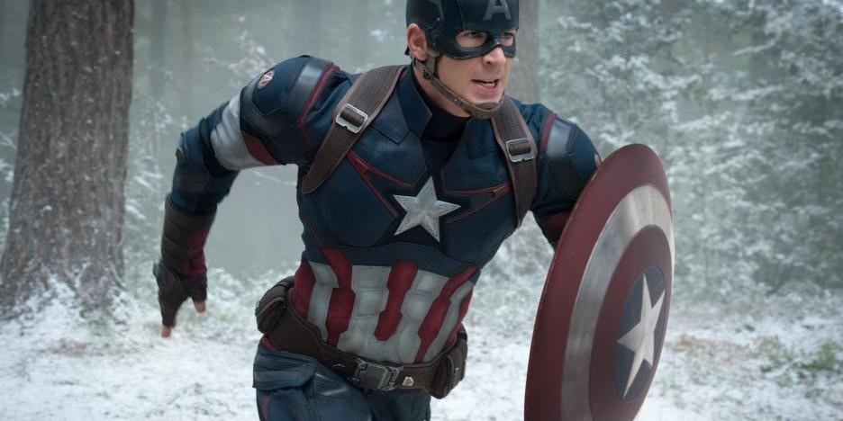
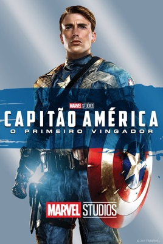
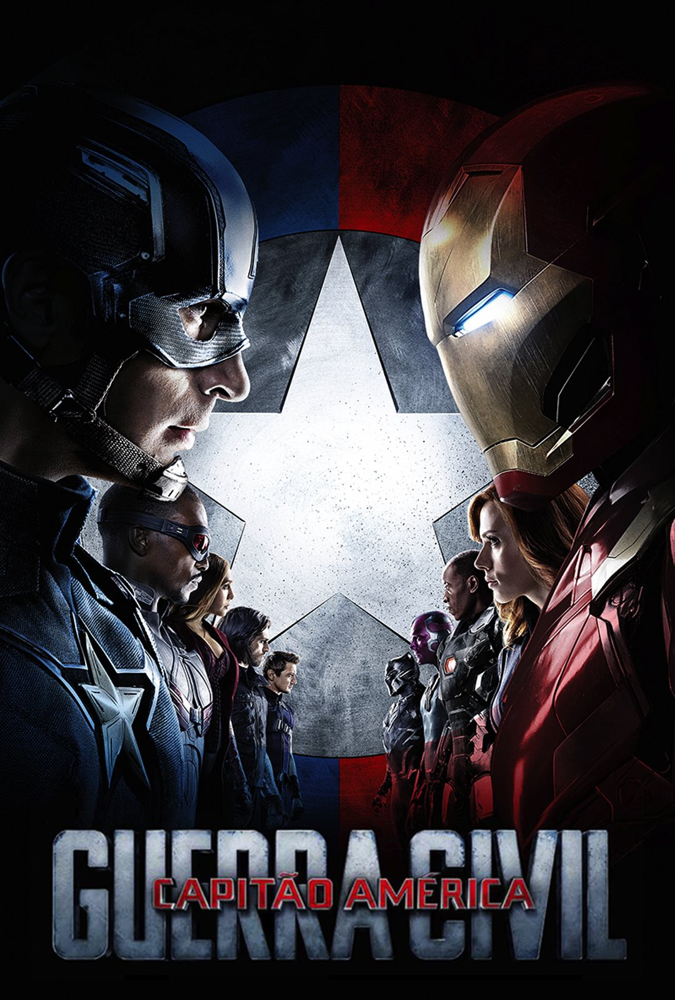
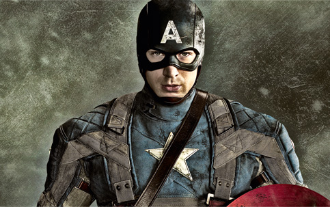
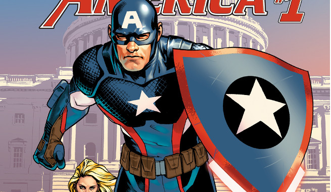
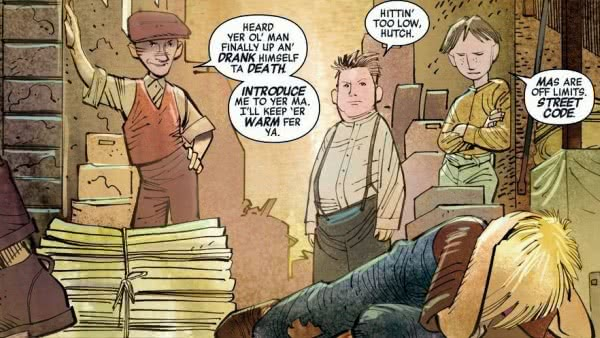
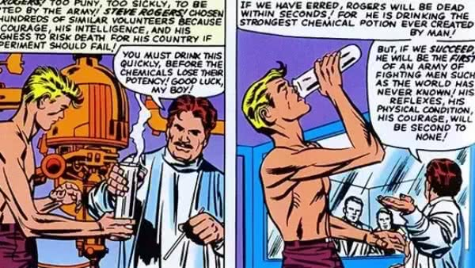
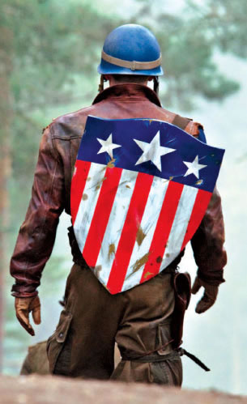
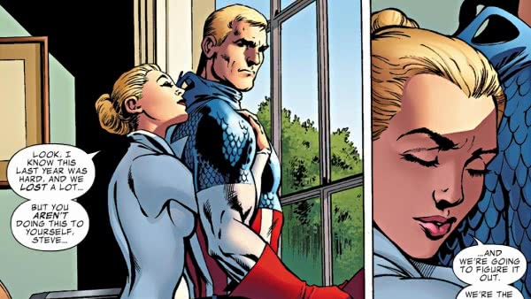

Capitão América

Links Relevantes
https://www.youtube.com/watch?v=-006iHDHK34
.jpg)
https://www.youtube.com/watch?v=rik1VguOKf4  https://www.youtube.com/watch?v=wODdcRnqDSo
Conteúdo
https://www.aficionados.com.br/capitao-america/

Capitão América é um dos super-heróis da Marvel mais antigos e mais populares de sempre, tendo sido criado mesmo antes da entrada dos EUA na Segunda Guerra Mundial. E, embora muitas pessoas que não sejam fãs de quadrinhos saibam muito sobre esse personagem.
Mais velho que a própria Marvel

Quando Steve Rogers ganhou sua HQ não existia ainda a Marvel, mas sim a Timely Comics. Inicialmente conhecida como Timely Publications, essa foi a mais antiga editora de quadrinhos de Martin Goodman e só em 1960 é que evoluiu para o que conhecemos hoje como Marvel Comics.
O personagem foi originalmente criado por Joe Simon e Jack Kirby em 1940, representando a vontade dos estadunidenses de entrarem na Segunda Guerra Mundial que se alastrava na Europa.
Naquela época, os EUA ainda não haviam se envolvido no conflito, mas a dupla queria criar um personagem que enfatizasse seus sentimentos pessoais a favor da entrada do país na Segunda Guerra Mundial. Além disso, os super-heróis patrióticos eram também muito populares na época.
Ler maisUltrapassando uma infância difícil

Steve Rogers nasceu a 4 de Julho de 1920, durante a Grande Depressão, nos EUA, em uma família de imigrantes pobres.
Além de ser um garoto frágil, seu pai era abusivo. Steve assistia, sem poder fazer nada para o evitar, a episódios de violência doméstica entre seus pais Joseph e Sarah, que pedia a seu marido alcoólico para deixar de ser desempregado. Ler mais
Se tornando um Super-Soldado

No início de 1940, chocado com as atrocidades nazis na Europa, Steve tentou se alistar no exército. Falhando os requerimentos devido a sua fragilidade e fraca saúde, ele foi convidado a se voluntariar para o Projeto Super-Soldado. O objetivo era melhorar os soldados estadunidenses fisicamente com a administração do Soro Super-Soldado do professor Abraham Erskine. Ler mais
Seu escudo nem sempre foi circular

O escudo do Capitão América nem sempre foi um círculo de vibranium. Sua arma original era um escudo francês decorado com as estrelas e riscas da bandeira americana.
Porém, a MLJ Magazines (que eventualmente se transformaria em Archie Comics) já tinha o seu super-herói patriótico chamado Escudo, o qual utilizava um símbolo ao peito muito parecido com a arma do Capitão. Simon e Kirby decidiram criar então o segundo escudo, aquele que nós conhecemos hoje, para os quadrinhos. Ler mais
Segunda Guerra Mundial e amizade com Bucky

Além de trabalhar como agente de contrainteligência, Rogers foi também usado como um herói simbólico com o objetivo de contra-atacar a propaganda Nazi liderada por Caveira Vermelha. Para isso, ele usou um uniforme de seu próprio design, baseado na bandeira estadunidense e o codinome Capitão América.
Naquela época, Rogers conheceu a mascote do acampamento militar em que se encontrava, o adolescente Bucky Barnes. O garoto descobriu acidentalmente a identidade secreta do soldado e se ofereceu para ser seu companheiro de aventuras. Steve treinou então Bucky e a dupla compartilhou muitas aventuras pelo mundo contra os nazis e seu líder, Caveira Vermelha. Ler mais
Os romances de Steve Rogers

Steve Rogers romanceou Peggy Carter, uma lutadora proeminente durante a Segunda Guerra Mundial. Tudo se complicou quando ele ficou preso no gelo, acordando apenas décadas depois. Mas Rogers resolveu rapidamente esse problema, entrando em uma relação com a Agente 13 da S.H.I.E.L.D., que é na verdade Sharon Carter, sobrinha de Peggy. Ler mais